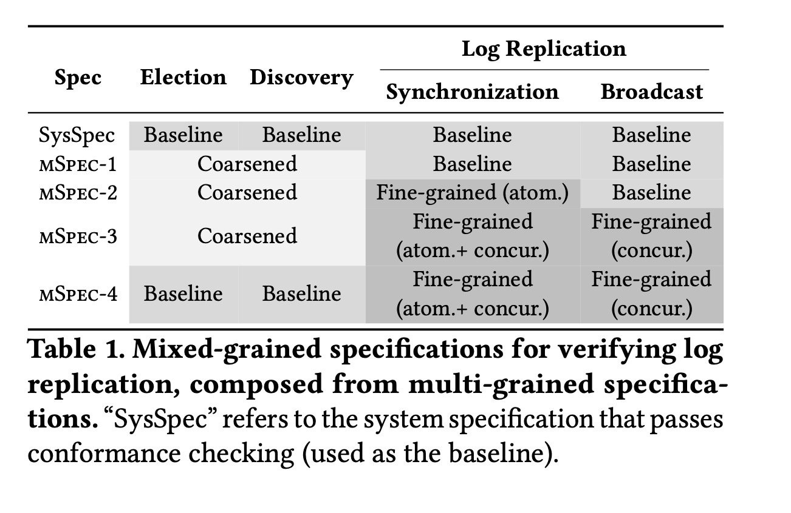
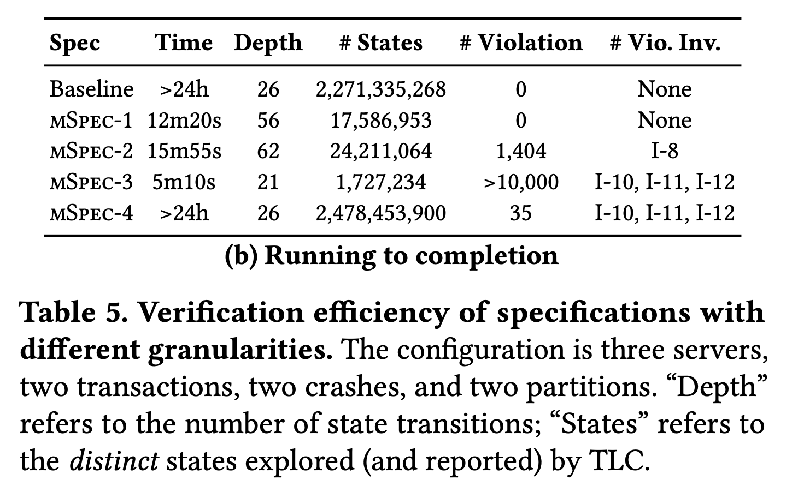

Multi-Grained Specifications for Distributed System Model Checking and Verification (Ouyang et al. 2025) describes an approach for specifying and verifying ZooKeeper. They write abstract TLA+ models of the ZooKeeper protocol, while also checking conformance between the model and code. To tackle state space explosion of models, they decompose the specs into modules which are then written at different "granularities", and composed together for checking properties.
The basic idea of multi-grained specifications is based around the ability to decompose an overall system specification into separate logical modulues, which can independently be specified at different "granularities" (e.g. levels of atomicity), and then composed together in a semantics preserving way. This enables efficient model checking by reliance on interaction preservation idea, which was introduced in prior work (Gu et al. 2022). The idea is that, for a given module, its behavior can be defined in terms of its interactions with other modules. Its "internal" behavior is irrelevant to the operation of the overall, composed system, so can be abstracted away as long as high level correctness properties don’t depend on any of this internal state.
In TLA+, they define global state of a system with variables and states are updated with actions. They define dependency variables of an action as the variables in the enabling condition of the action. A module is defined as a set of actions, and the dependency variables of a module are then defined as the union of dependency variables for all actions in the module.
They claim that coarsening of a module preserves interaction if
All dependency variables of the target module, as well as all interaction variables, remain unchanged after the coarsening.
All the updates of the dependency variables and interaction variables remain unchanged after the coarsening.
So, overall, if you can describe a specification \(S\) as composed of \(n\) modules as \[\begin{aligned} S = \bigcup_{1 \leq i \leq n} M_i \end{aligned}\] and \(\overset{\sim}{M_i}\) represents the coarsened version of module \(M_i\), then if the above hold, then \(S_i\) is denoted as the specification by coarsening \(S\) with every other module except \(M_i\) i.e. \[\begin{aligned} S_i = \left(\bigcup_{j \neq i} \overset{\sim}{M_j}\right) \cup M_i \end{aligned}\]
They claim the main theorem, the Interaction Preservation Theorem, which says essentially that:
Theorem 1. Given \(S = \bigcup_{1 \leq i \leq n} M_i\) and \(S_i = \left(\bigcup_{j \neq i} \overset{\sim}{M_j}\right) \cup M_i\), we have \(T_S \overset{M_i}{\sim} T_{S_i}\).
where \(T_S \overset{M_i}{\sim} T_{S_i}\) is defined as trace \(T_S\) and \(T_{S_i}\) being equal when projected to \(M_i\)
They built a tool called Remix, which includes a conformance checking framework for checking ZooKeeper implementation against their specifications. The conformance checker explores random traces of the model-level state space under some budet, and then runs these model traces checking for discrepancies between implementation and model. As they describe it, apparently developers still need to manually provide a mapping from each model-level action to the events in the code that represent the beginning and end of the corresponding code-level action. They use some Java specific instrumentation tools (AspectJ) to achieve all of this, but it seems the manual burden of defining these conformance mappings is still high/nontrivial

Basically, they find a bunch of bugs. They also note the significant efficiency gains from checking multi-grained specifications. They note in some cases over 1000x speedups in exploration costs, as illustrated in Table 5.

Are their interaction-preserving coarsenings guaranteed to be formally correct in any way, or are they just eyeballing it? For bug-finding, eyeballing is arguably ok, since you’re not as worried about completeness, and if you find a candidate bug, you can check it manually for veracity. But for completeness, I feel sketchy about their approach being formally correct.
Conformance checking still seems laborious, as with many other papers on the topic. Not really sure if there’s much to take away from that aspect i.e. it seems there was a lot of manual effort involved and is not clear it would be be easy to do in general for many systems. Multi-grained specification aspect seems the main value here.